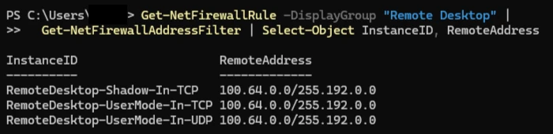
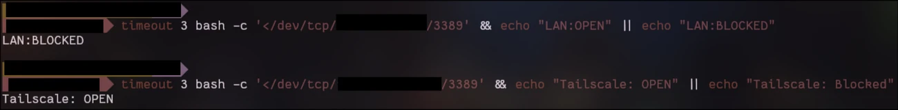
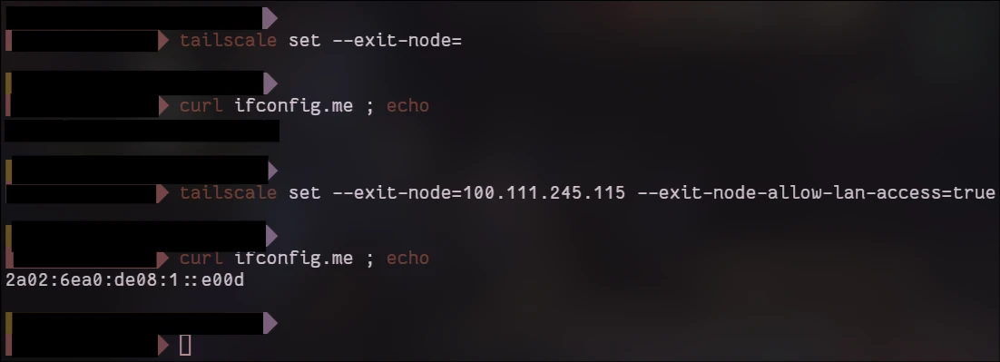

Secure remote access
RDP from Fedora to Windows 11 over Tailscale and Mullvad
I'd just installed Fedora on my ThinkPad and needed to remote into my Windows 11 laptop at home. I used to do this with Chrome Remote Desktop on Kali. That didn't carry over cleanly to Fedora, so I used the switch as a chance to build something more secure that I actually understood.
What I ended up with is an RDP session over Tailscale that works from public Wi-Fi, with port 3389 never opened to the internet. Both machines send the rest of their traffic through Mullvad.
- Access
- RDP over Tailscale (WireGuard), NLA on
- Exposure
- Port 3389 never forwarded to the internet
- Firewall
- RDP allowed only from 100.64.0.0/10
- Egress
- Mullvad exit nodes on both machines
- Fallback
- SSH SOCKS proxy when a network blocks UDP
- Log
- 5 issues, each with root cause and fix
Why I did it this way
No open RDP port
RDP on port 3389 is one of the most attacked services there is, so I never forward it. I picked Tailscale over plain WireGuard because it handles the keys, NAT traversal and device management for me.
Mullvad through Tailscale
I started with the standalone Mullvad app running next to Tailscale. Both want to control routing, and they fought each other. Tailscale's Mullvad add-on offers the same servers as exit nodes, so now one tool handles the private tunnel and the VPN.
How I know it worked
Three of the checks I ran. IPs, usernames and hostnames are redacted in the screenshots.
The firewall only accepts RDP from Tailscale addresses
All three Remote Desktop rules are limited to Tailscale's address range. Windows displays the /10 as a subnet mask.
PS> Set-NetFirewallRule -DisplayGroup "Remote Desktop" -RemoteAddress 100.64.0.0/10

Port 3389 is closed on the LAN and open over Tailscale
I ran both tests from inside my home network. The LAN address refused the connection and the Tailscale address accepted it.


Websites see a Mullvad address
My public IP before and after switching the exit node on. The second lookup returns a Mullvad address.
$ curl ifconfig.me

What went wrong
Three of the five issues I hit.
-
Every RDP logon failed after the password prompt
- What I saw
- Every FreeRDP variant returned
ERRCONNECT_LOGON_FAILURE, along with Kerberos errors about a missing KDC for realmGMAIL.COM. - Cause
- The log showed the server's certificate arriving, which meant the network, Tailscale and the firewall were all fine and the problem was authentication. Windows was set to Hello-only sign-in, and I was using my email address as the username.
- Fix
- I turned off Hello-only sign-in and signed in locally once with the password. Then I ran
whoamito get the local username and connected with that.
-
Windows dropped off the tailnet when Mullvad was on
- What I saw
- The Windows laptop showed as last seen a few minutes ago and couldn't be reached, even though it was still running.
- Cause
- Mullvad and Tailscale are both built on WireGuard, and both try to manage routing and the firewall. Mullvad's firewall was blocking Tailscale's traffic, and split tunneling didn't reliably exempt it.
- Fix
- Disconnecting Mullvad brought the laptop straight back, which confirmed the cause. I removed the standalone app and switched to Tailscale's Mullvad add-on.
-
Nothing loaded on library Wi-Fi with the exit node on
- What I saw
- The internet worked with the exit node off and failed with it on. RDP to the Windows laptop still worked.
- Cause
tailscale netcheckreportedUDP: false. WireGuard needs UDP and the library blocks it. Tailscale fell back to its relays over TCP 443 for my own devices, but the Mullvad exit node couldn't do the same.- Fix
- I run an SSH SOCKS proxy to the Windows laptop over the tailnet, so Firefox's traffic leaves through home and its Mullvad exit node. mullvad.net/check passes with no DNS leaks.
What I learned
Network reachability, transport and authentication all fail with different errors. Working out which layer was broken first saved me a lot of guessing, and the certificate in the FreeRDP log is what told me the network was fine.
I also understand now that Tailscale and Mullvad do different jobs. Tailscale connects my devices to each other, and Mullvad hides my traffic from everyone else.
Tools: Remote Desktop Protocol, FreeRDP and Remmina, Tailscale and WireGuard, Mullvad exit nodes, Windows Firewall through PowerShell, OpenSSH, Fedora.